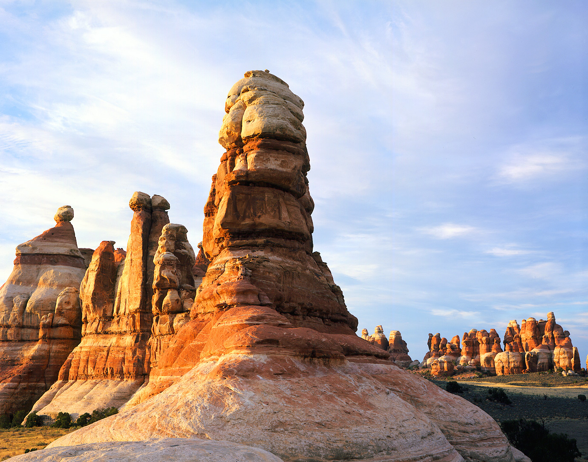

National Parks – America's Natural Legacy
Canyonlands National Park

Canyonlands is comprised of a wilderness of countless canyons and fantastically formed buttes carved by the Colorado River and its tributaries. Rivers divide the park into four districts: the Island in the Sky, the Needles, the Maze, and the rivers themselves. These areas share a primitive desert atmosphere, but each offers different opportunities for sightseeing and adventure.